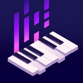
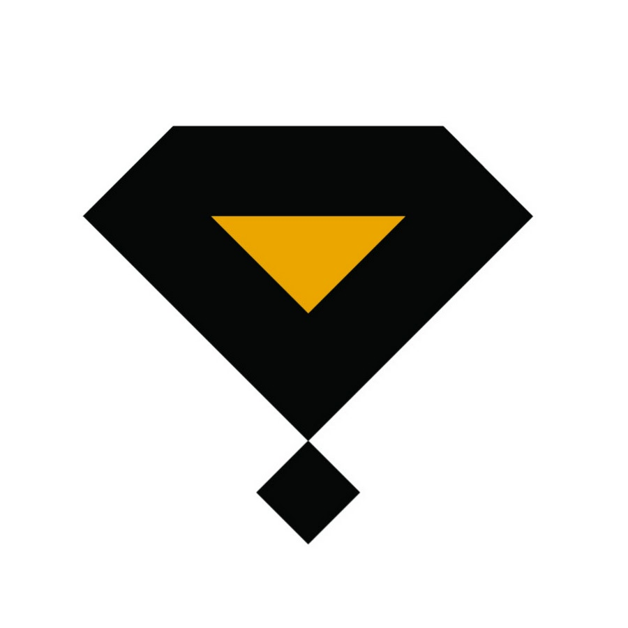

Algorithmic Scale Classification: Developed a machine learning algorithm in Python/C++ using Higher-Order Markov Models to classify traditional Persian music scales (Dastgahs) with 91% accuracy. Boosted performance to 97% precision using dataset augmentation and GridSearchCV.

Polyphonic Pitch Detection & ML Optimization: Engineered a high-accuracy real-time polyphonic pitch detection engine in C++ for piano. Fine-tuned parameters using neural networks (PyTorch/TensorFlow) and statistical models (NumPy/Scikit-Learn), improving note recognition precision from 75% to 86%. Integrated the optimized audio processing engine into the client's iOS app.

Embedded Hardware & Systems Architecture: Designed custom capacitive touch sensing hardware and built low-latency Linux-based software pipelines (utilizing Raspberry Pi 4, HiFiBerry amplifiers, and Arduino) to process real-time tactile gestures into dynamic, event-driven audio responses.
Generative Machine Learning & Memory Models: Implemented adaptive, non-linear algorithmic models (Higher-Order Markov Models and LSTMs) that give physical canvases an evolving "memory," making real-time sound output a function of cumulative interaction history rather than simple static triggers. Trained CNN models to map visual composition features into sound parameters.
Networked Interaction Engine: Architected real-time networking infrastructure connecting multiple Sounding Canvases over the internet, enabling physical touch in one location to trigger organic, evolving soundscapes on a companion canvas worldwide.